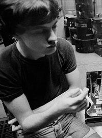

Dirty Deeds Done Dirt Cheap (1976)
- Dirty Deeds Done Dirt Cheap é o quarto álbum de estúdio da banda australiana AC/DC, lançado a 20 de Setembro de 1976.
Esse álbum foi lançado primeiramente na Austrália em 1976. O álbum não foi lançado no EUA até 1981, mais de um ano após a morte de Bon Scott. O disco marcou (juntamente com T.N.T.) a conquista de milhares de fãs, junto da primeira turnê mundial da banda. Foi o Quarto álbum gravado pelo AC/DC.
Duração do album: 42:24 (Austrália) || 39:59 (Internacional)
Gravadora(s):Albert Productions
Produção: Harry Vanda e George Young
-
"Dirty Deeds Done Dirt Cheap" foi encurtado no lançamento Internacional.
-
"Love at First Feel" foi uma nova faixa não lançada anteriormente na Austrália. Mais tarde, foi lançado como um single.
-
"Problem Child" foi incluído no lançamento internacional em sua forma original australiana.
Créditos
- Bon Scott – Vocais
- Angus Young – Guitarra solo, Socais
- Malcolm Young– Guitarra Rítmica, Vocais
- George Young – Produção.
- Mark Evans– Baixo, Vocais
- Phil Rudd– Bateria
Brian Johnson 5 de Outubro de 1947 é um cantor Inglês e compositor que desde 1980, tem sido o vocalista do AC/DC. Em 1972, tornou-se um dos membros fundadores da banda de glam rock, “Geordie”. Mas assim que assinaram um novo contrato com uma gravadora, Brian Johnson foi convidado para a audição do AC/DC, cujo vocalista, Bon Scott, havia falecido.
 Angus McKinnon Young (31 de março de 1955) é um guitarrista e compositor, conhecido por ser guitarrista solo, compositor, líder e co-fundador da banda AC/DC.
Angus McKinnon Young (31 de março de 1955) é um guitarrista e compositor, conhecido por ser guitarrista solo, compositor, líder e co-fundador da banda AC/DC.
No ano de 2003, foi introduzido juntamente com outros membros do AC/DC no Rock and Roll Hall of Fame.
Foi considerado o 24.º melhor guitarrista de todos os tempos pela revista norte-americana Rolling Stone.
 Malcolm Mitchell Young (6 de janeiro de 1953 — 18 de novembro de 2017) foi um guitarrista e compositor escocês naturalizado australiano e fundador, junto com seu
irmão mais novo Angus Young, do AC/DC, da qual era o guitarrista rítmico, vocalista de apoio e compositor.
Malcolm Mitchell Young (6 de janeiro de 1953 — 18 de novembro de 2017) foi um guitarrista e compositor escocês naturalizado australiano e fundador, junto com seu
irmão mais novo Angus Young, do AC/DC, da qual era o guitarrista rítmico, vocalista de apoio e compositor.
Em 2014 Malcolm Young afastou-se da banda por estar sofrendo de demência. Morreu a 18 de novembro de 2017, aos 64 anos.
 Alfred Redburn Young (6 de novembro de 1946 - Sydney, Austrália, 22 de outubro de 2017) foi um músico australiano de rock, compositor e produtor musical, mais conhecido como integrante de 1960 da banda The Easybeats, o co-autor de sucessos internacionais, tais como "Friday on My Mind" e "Love Is in the Air", e por sua produção da banda AC/DC.
 Mark Evans (2 de março de 1956)é um baixista australiano, mais conhecido como um dos primeiros baixistas do AC/DC, onde participou de cinco discos entre 1975 e 1977.
Mark saiu da banda por desentendimentos com o guitarrista Angus Young.
Mark Evans (2 de março de 1956)é um baixista australiano, mais conhecido como um dos primeiros baixistas do AC/DC, onde participou de cinco discos entre 1975 e 1977.
Mark saiu da banda por desentendimentos com o guitarrista Angus Young.
Em 2011, Mark lançou o livro: Dirty Deeds: My Life Inside / Outside of AC / DC, que conta os bastidores das gravações com o AC/DC, além de suas memórias dos shows com o grupo.
 Phillip Norman Hugh Rudd, nasceu com o nome de Hugh Phillip Norman Witschke Rudzevecuis. Nascido em 19 de Maio de 1954, é um baterista australiano. Ocupou
o cargo de 1975 até 1983 e novamente de 1994 até a data presente na banda AC/DC. Após a saída do baixista Mark Evans em 1977, Phil se tornou o único membro australiano na banda.
Phillip Norman Hugh Rudd, nasceu com o nome de Hugh Phillip Norman Witschke Rudzevecuis. Nascido em 19 de Maio de 1954, é um baterista australiano. Ocupou
o cargo de 1975 até 1983 e novamente de 1994 até a data presente na banda AC/DC. Após a saída do baixista Mark Evans em 1977, Phil se tornou o único membro australiano na banda.